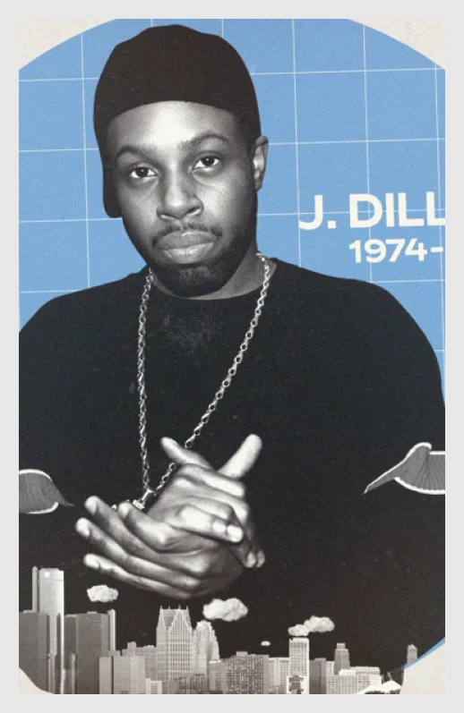

James Dewitt Yancy
(February 7, 1974 – February 10, 2006)
James Dewitt Yancey, better known as J Dilla or Jay Dee, was born on February 7, 1974, in Detroit, Michigan. In his early years, Dilla was enveloped in a musical environment. His mother, Maureen "Ma Dukes" Yancey, was an opera singer, and his father, Beverly Dewitt Yancey, was a jazz bassist and vocalist.
In school, Dilla was exposed to a variety of instruments and developed a fondness for the drums and keyboard. This multifaceted talent and innate rhythm would serve as the foundation for his future beats and musical prowess.
